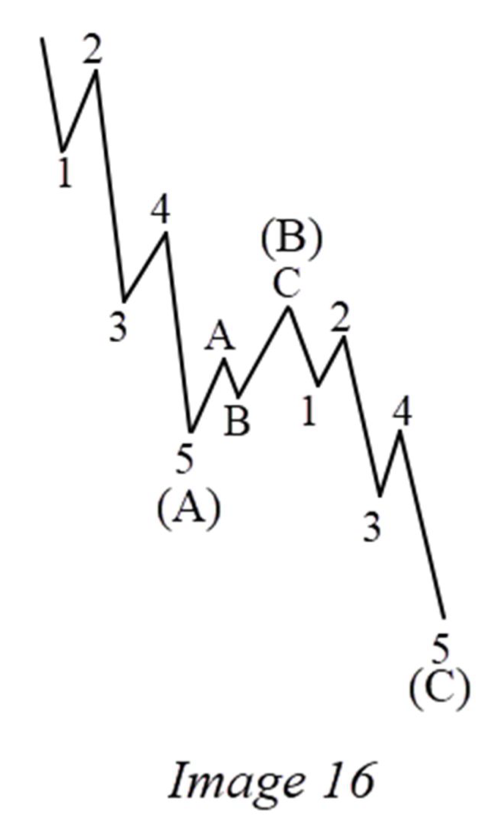
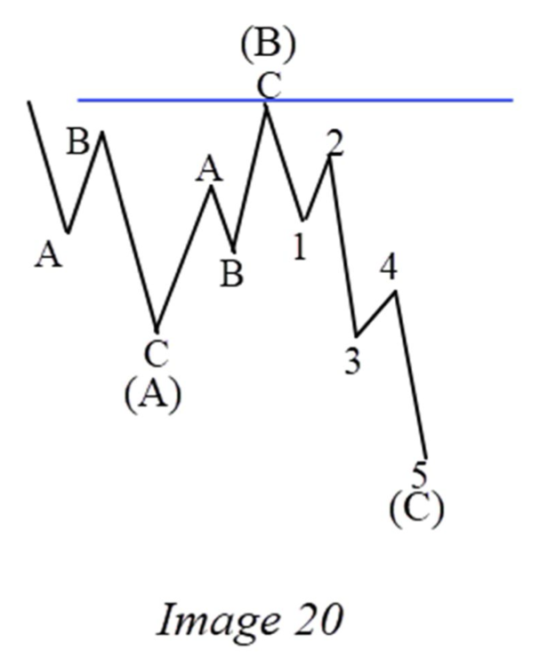
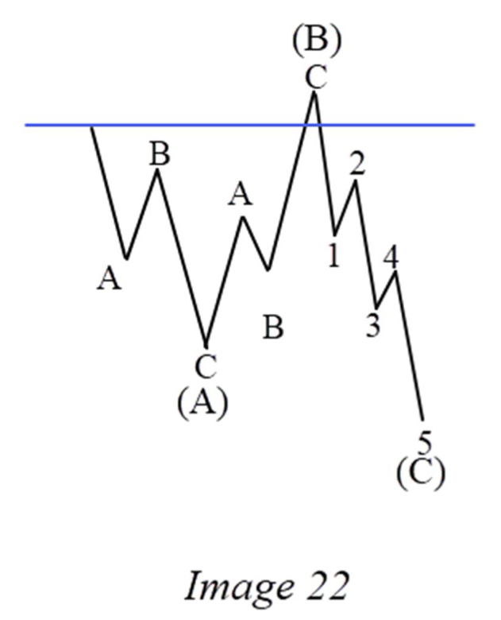
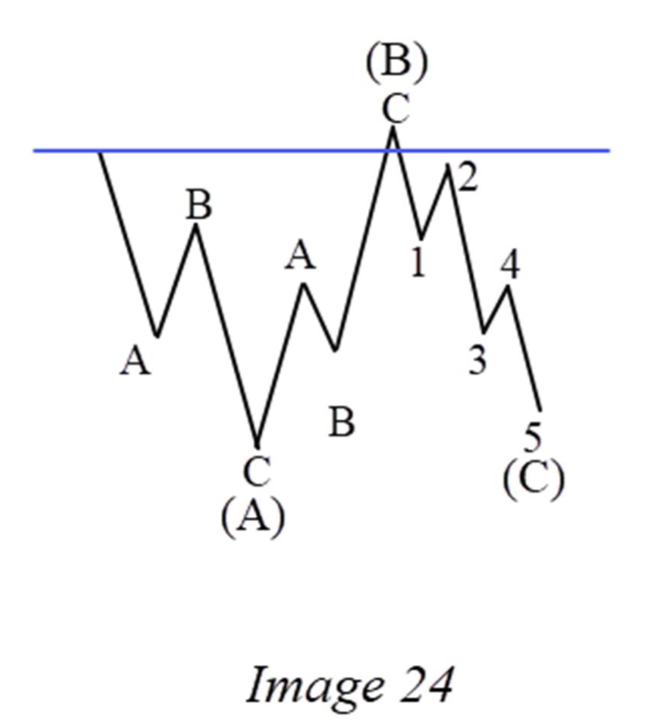
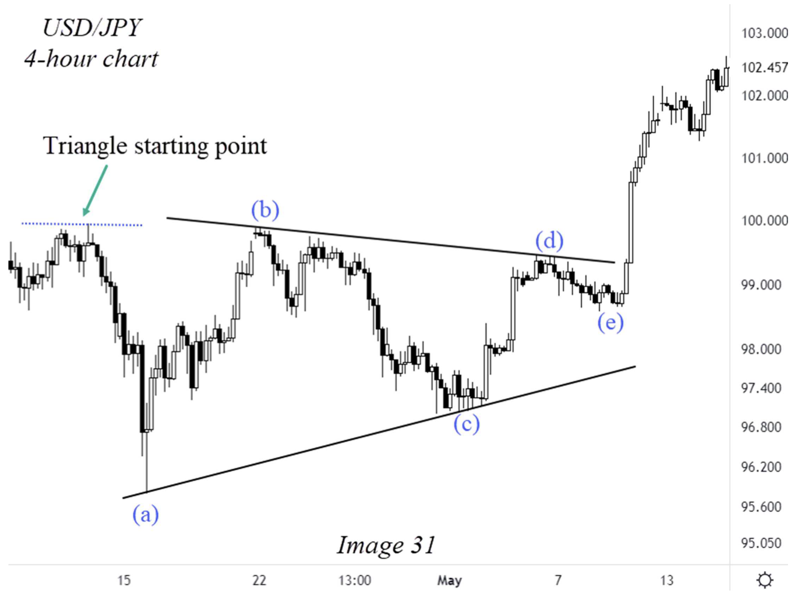
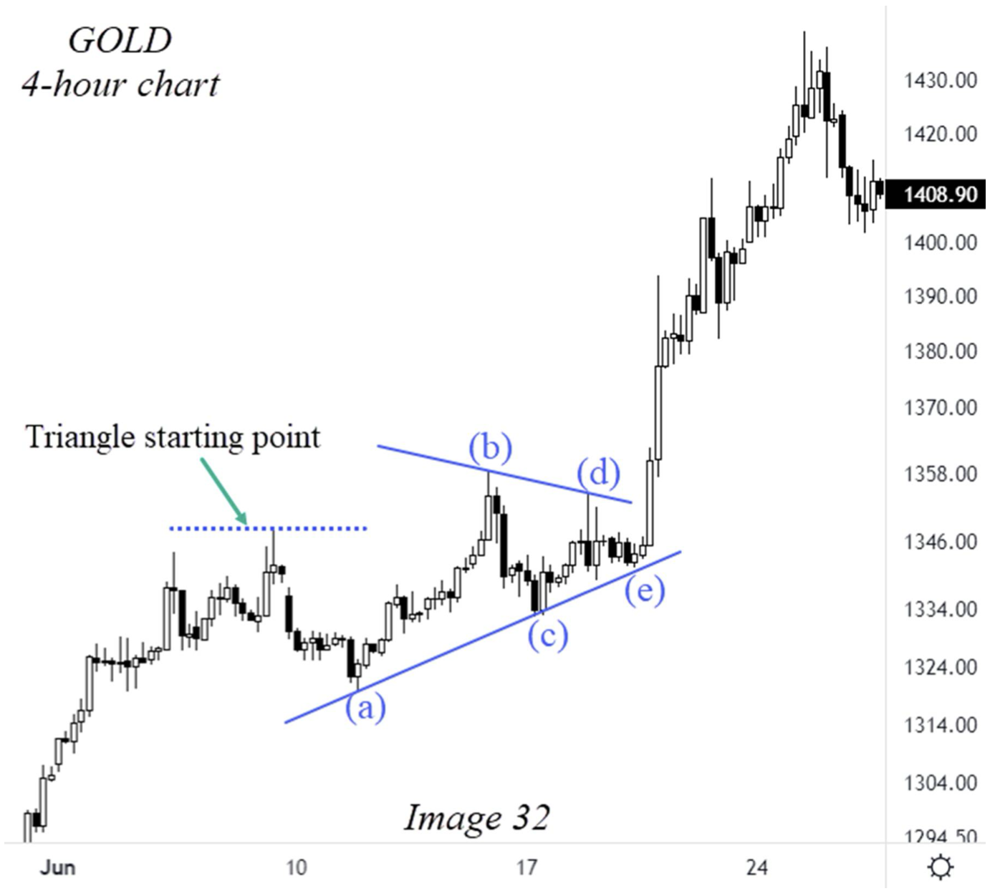
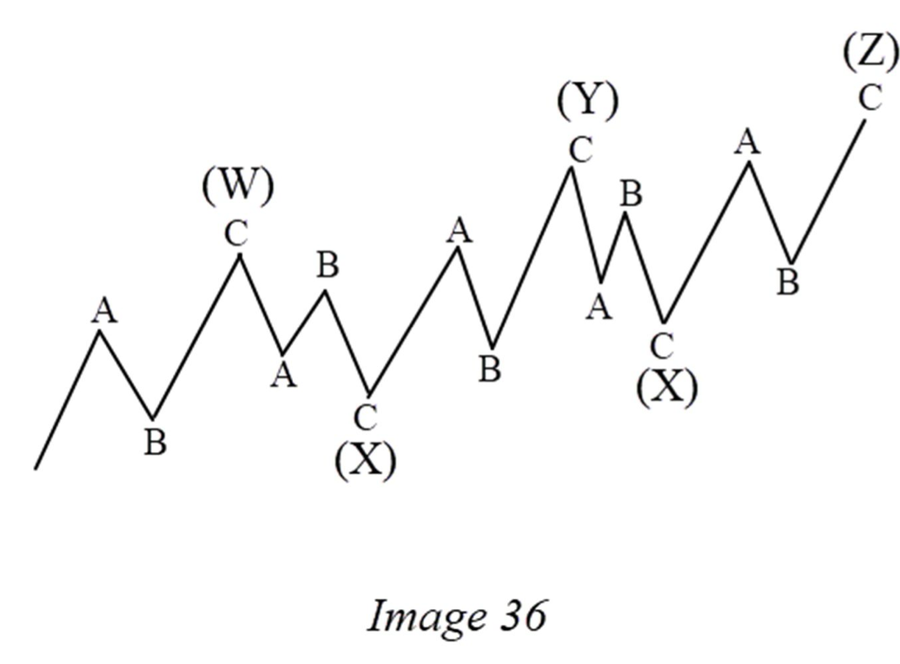

CHAPTER III · PDF tr. 28–56
THE CORRECTIVE PHASE Pha điều chỉnh
Đọc trang 28–56 trong PDF, theo các mục dưới đây, rồi làm 18 câu hỏi của riêng chương này. Nội dung dưới đây là tóm lược đọc hiểu, không thay thế toàn chương gốc.
1. Simple Correction — Zig-Zag Correction (5-3-5) Flat Correction (3-3-5) Regular Flat Correction Expanding Flat Correction Running Flat Correction Triangle Correction (3-3-3-3-3) 2. Complex Correction — Double Three (3-3-3) Triple Three (3-3-3-3-3) A Simple Trick In Identifying Complex Corrections! Trắc nghiệm (18 câu)
1. Simple Correction — Zig-Zag Correction (5-3-5) PDF tr. 28–32
Zigzag dùng A–B–C: A/C motive, B corrective. Với điều chỉnh trong uptrend, sách yêu cầu B dưới gốc A và C xuống dưới cuối A; đảo hướng cho điều chỉnh trong downtrend.

Steve Sinclair · Image 16 · PDF tr. 30 · Trích hình để đối chiếu phần đang học; nhãn gốc của tác giả. Flat Correction (3-3-5) PDF tr. 32–33
A/B có tính điều chỉnh, C có năm sóng. Sách đặt ngưỡng B kiểm tra lại A và có ngoại lệ riêng cho forex; đọc rõ phạm vi trước khi so ba biến thể.
Regular Flat Correction PDF tr. 33–35
B hồi sâu nhưng không vượt gốc A; C vượt cuối A theo hướng điều chỉnh. Dùng Hình 20 để theo A/B/C cấp lớn trước khi đọc nhãn con.

Steve Sinclair · Image 20 · PDF tr. 34 · Trích hình để đối chiếu phần đang học; nhãn gốc của tác giả. Expanding Flat Correction PDF tr. 35–37
B vượt gốc A; C tiếp tục vượt cuối A. Sách dùng tên Expanding Flat, nên khóa này giữ tên đó thay vì tự đổi hệ thuật ngữ.

Steve Sinclair · Image 22 · PDF tr. 36 · Trích hình để đối chiếu phần đang học; nhãn gốc của tác giả. Running Flat Correction PDF tr. 37–39
B cũng vượt gốc A, nhưng C không vượt cuối A. Đây là khác biệt cần so trực tiếp với Expanding Flat; sách coi running flat hiếm.

Steve Sinclair · Image 24 · PDF tr. 38 · Trích hình để đối chiếu phần đang học; nhãn gốc của tác giả. Triangle Correction (3-3-3-3-3) PDF tr. 39–46
Năm chân A–B–C–D–E. Học đúng thứ tự Contracting → Barrier → Running → Expanding; so co/mở rộng, B/D gần ngang và B vượt gốc A.

Steve Sinclair · Image 31 · PDF tr. 45 · Trích hình để đối chiếu phần đang học; nhãn gốc của tác giả. 
Steve Sinclair · Image 32 · PDF tr. 46 · Trích hình để đối chiếu phần đang học; nhãn gốc của tác giả. 2. Complex Correction — Double Three (3-3-3) PDF tr. 46–51
Sách dùng W–X–Y cho ba thành phần điều chỉnh. X nối W và Y. Đọc các dạng được phép ở từng thành phần và quy tắc tác giả ghi ở trang 50.
Triple Three (3-3-3-3-3) PDF tr. 51–54
Dạng nối dài dùng W–X–Y–X–Z; phần liệt kê còn ký hiệu connector thứ hai là X2. Hình 36 giúp phân biệt các nhãn thành phần với A/B/C bên trong.

Steve Sinclair · Image 36 · PDF tr. 52 · Trích hình để đối chiếu phần đang học; nhãn gốc của tác giả. A Simple Trick In Identifying Complex Corrections! PDF tr. 54–56
Tác giả đếm bảy higher highs/higher lows để nhận diện double three, rồi đặt W ở nhịp 3, X ở nhịp 4 và Y ở nhịp 7. Đây là mẹo nhận diện trong sách, không phải một bài kiểm chứng độc lập.
Lưu ý khi đối chiếu nguồn Câu hỏi đọc hiểu giữ cả ngưỡng 90% và ngoại lệ 78,6% trong forex như sách nêu; không âm thầm thay bằng ngưỡng riêng của khóa cũ. PDF tr. 33–34 Sách phân biệt các quy tắc complex do tác giả dùng và mẹo bảy nhịp. Học để hiểu nguồn, không suy ra bảy swing bất kỳ tự chứng minh W–X–Y. PDF tr. 50–55 Trắc nghiệm chương III Chỉ hỏi nội dung thuộc trang 28–56. Chọn một đáp án mỗi câu rồi chấm; câu chưa trả lời tính là chưa đúng. Lời giải có trang kiểm tra lại.
1. Cấu trúc con của zigzag là gì? PDF tr. 29–30
A. 3–3–5 B. 5–3–5 C. 3–3–3–3–3
2. Trong zigzag, chân nào có tính corrective? PDF tr. 29–30
A. A B. C C. B
3. Zigzag điều chỉnh trong uptrend: endpoint B phải ở đâu? PDF tr. 30
A. Dưới gốc A B. Trên gốc A C. Bất kỳ vị trí nào
4. Zigzag điều chỉnh trong uptrend: endpoint C phải ở đâu? PDF tr. 30 · Xem hình liên quan trong bài
A. Trên gốc A B. Dưới cuối A C. Bằng cuối B
5. Cấu trúc chung của flat là gì? PDF tr. 32–34
A. 5–3–5 B. 5–5–5 C. 3–3–5
6. Sách nêu ngưỡng B của flat và ngoại lệ forex như thế nào? PDF tr. 33–34
A. 90%; cho phép 78,6% trong forex B. 50%; luôn cho phép 23,6% C. 161,8%; không có ngoại lệ
7. Regular flat: B có vượt gốc A không? PDF tr. 34 · Xem hình liên quan trong bài
A. Bắt buộc vượt B. Không vượt gốc A C. Không cần quan sát B
8. Expanding flat điều chỉnh trong uptrend: điều kiện cặp B/C nào được sách nêu? PDF tr. 36 · Xem hình liên quan trong bài
A. B dưới gốc A; C trên cuối A B. B chỉ bằng 50% A; C không quan trọng C. B vượt gốc A; C xuống dưới cuối A
9. Điểm nào phân biệt running flat với expanding flat? PDF tr. 38–39 · Xem hình liên quan trong bài
A. C không vượt cuối A B. Không có wave B C. C chỉ có ba sóng
10. Triangle được gắn nhãn như thế nào? PDF tr. 40
A. 1–2–3 B. A–B–C–D–E C. W–X–Y
11. Bộ bốn biến thể triangle theo thứ tự sách là gì? PDF tr. 40–44
A. Regular, expanding, running, triple B. Leading, ending, extended, flat C. Contracting, barrier, running, expanding
12. Barrier triangle có đặc điểm bổ sung nào? PDF tr. 41–42
A. B và D kết thúc gần cùng mức B. Không có chân E C. Mọi chân đều dài hơn chân trước
13. Running triangle điều chỉnh trong uptrend có B như thế nào? PDF tr. 42–46 · Xem hình liên quan trong bài
A. Dừng đúng giữa A B. Vượt mức bắt đầu A C. Luôn thấp hơn cuối A
14. Expanding triangle: quan hệ độ dài các chân là gì? PDF tr. 43–44
A. B<A, C<B, D<C, E<D B. Tất cả bằng nhau C. B>A, C>B, D>C, E>D
15. Nhãn cấp lớn của double three là gì? PDF tr. 47–49
A. W–X–Y B. A–B–C–D–E C. 1–2–3–4–5
16. Triple three dùng chuỗi nhãn nào? PDF tr. 51–54 · Xem hình liên quan trong bài
A. A–B–C B. W–X–Y–X–Z C. 1–2–3
17. Trong mẹo bảy nhịp của sách, W/X/Y được đặt ở đâu? PDF tr. 54–56
A. Nhịp 1/2/3 B. Nhịp 2/4/6 C. Nhịp 3/4/7
18. Trước khi học complex correction, tác giả khuyên gì? PDF tr. 48–49
A. Nhận diện tốt simple corrections trước B. Bỏ qua zigzag và flat C. Luôn tìm complex bên trong complex
Chấm bài và xem giải thích Làm lại chương này Tải câu trả lời JSON In chương
Chưa chấm.
Lựa chọn được lưu riêng cho khóa theo chương trên trình duyệt này.
Cần bật JavaScript để chấm và lưu câu trả lời. Bạn vẫn có thể đọc chương và mở PDF gốc.
Điểm là kết quả đọc hiểu tài liệu, không phải chứng nhận đếm sóng hay hiệu quả giao dịch.
← Chương II Chương IV →